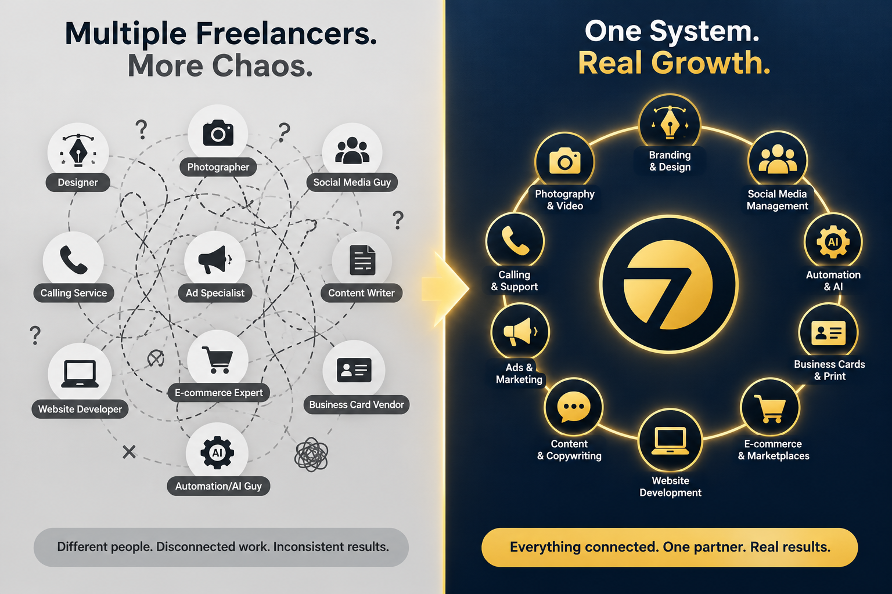
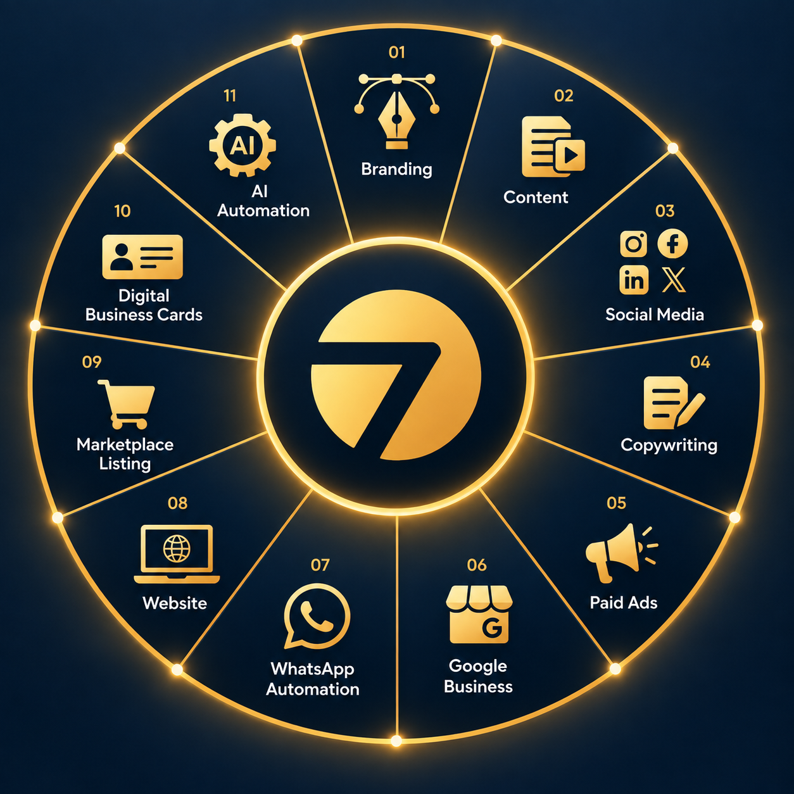
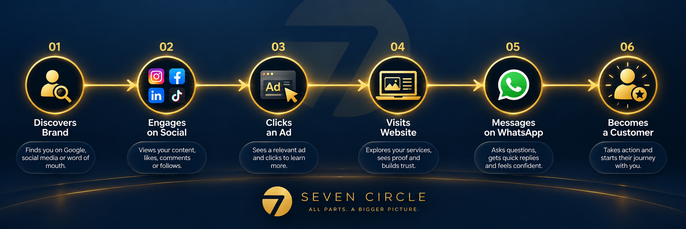
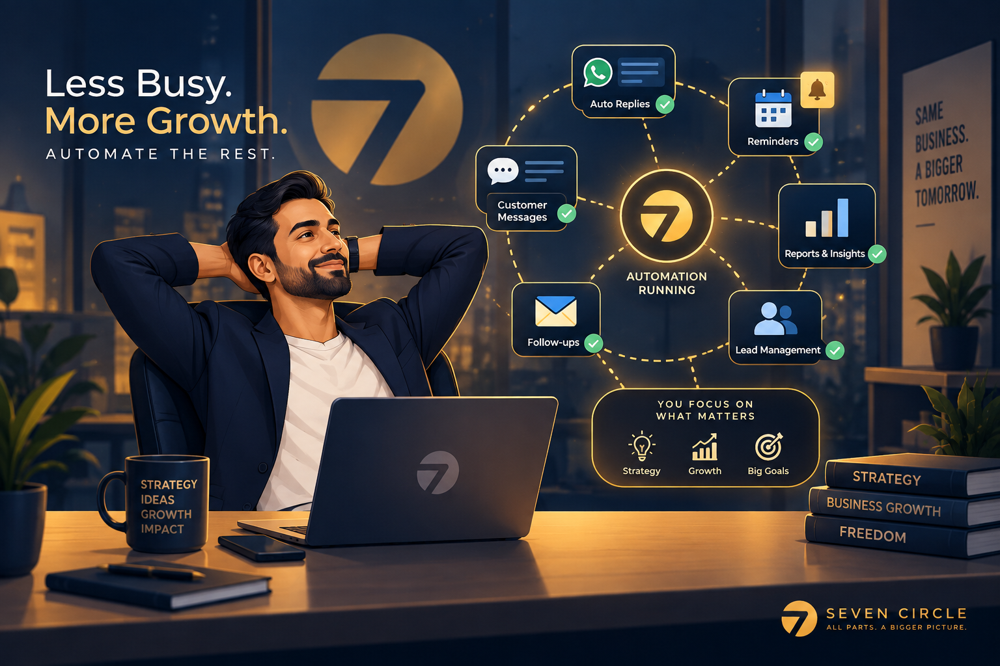
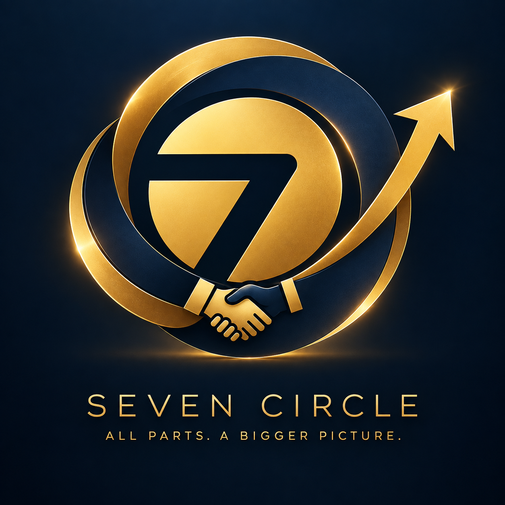

Growing a business shouldn’t mean
managing seven different vendors.
Here’s what usually happens as a business tries to grow: you hire a freelancer for social media, another one for your website, an “ads guy” who runs your campaigns, someone else for your logo, and you’re stuck manually replying to WhatsApp messages at 11 PM because nobody automated that part.
Nothing is connected. Nobody talks to each other. Your branding says one thing, your ads say another, and your website doesn’t match either. You’re not running a marketing strategy — you’re managing a group project with no project manager.
Seven Circle exists to fix exactly that.
We’re a full-service digital marketing agency built around one idea: your branding, content, ads, website, automation, and customer communication should all work as one connected system — not a pile of disconnected tasks handled by disconnected people.
Here’s exactly how we do that, service by service.

One system.
Real growth.
A full-service partner is not about doing everything for the sake of doing more. It is about making every marketing decision reinforce the next one.
Your brand should guide your content. Your content should make your ads stronger. Your ads should lead to a website that converts. Your website and Google profile should make it easy to take action. And when someone reaches out, automation should make sure the opportunity is not lost.
That is the Seven Circle model: every part has a job, but every part also belongs to the bigger picture.
Everything your growth needs,
under one roof.
These services work independently when they need to, but they are most powerful when they are planned together.
Building a business people
remember and trust.
Your brand is the first impression before a single word is spoken — your logo, colors, voice, and overall identity. Without a strong, consistent brand, even a great product can feel forgettable or low-value next to competitors.
What we do: Logo design, visual identity systems, brand voice and messaging guidelines, and positioning strategy that makes your business instantly recognizable and trustworthy.
Fueling every other
channel you have.
Every platform — your website, social media, ads, and marketplace listings — runs on content. Without a consistent content engine, every other service is starved of the material it needs to actually perform.
What we do: Photography and video direction, graphic design, reels and short-form video, and a structured content calendar built around what your specific audience actually engages with.

Words that
actually sell.
The difference between a sale and a bounce is often the exact words on the page. Generic, feature-focused copy gets scrolled past. Persuasive, benefit-driven copy gets clicked, trusted, and bought.
What we do: Website copy, ad copy, product descriptions, email sequences, and social captions written to convert — not just to fill space.
Getting the right eyes
on your business, fast.
Organic growth takes time. Paid advertising, done right, accelerates visibility and sales immediately — but only when targeting, creative, and landing pages are all aligned toward the same goal.
What we do: Meta, Google, and platform-specific ad campaigns built around clear funnels — from cold audience awareness to high-intent retargeting — with transparent, outcome-focused reporting.

Turning “found”
into “called.”
Ranking on Google means nothing if your profile doesn’t build enough trust to earn the call. Reviews, photos, accurate information, and active engagement all decide whether a searcher picks up the phone or scrolls to a competitor.
What we do: Full profile optimization, review generation systems, photo strategy, and ongoing management to keep your local presence active, accurate, and trustworthy.
Never losing a lead
to slow replies again.
Most leads go cold simply because nobody replied fast enough. Automated WhatsApp flows respond instantly — to new leads, order confirmations, appointment reminders, and common questions — 24/7, without you lifting a finger.
What we do: Automated lead follow-up sequences, order and booking confirmations, FAQ auto-responses, and review request flows — all personalized to feel human, not robotic.
Your hardest-working
salesperson.
Your website is often the final decision-making stop before a purchase. A slow, outdated, or confusing site quietly undoes the trust every other channel worked to build.
What we do: Fast, mobile-optimized website design and development built to convert — with clean structure that also supports strong SEO and GEO (AI search) performance.
Winning on Amazon,
Flipkart and Meesho.
Marketplaces are search engines and sales pages combined. A weak listing — poor keywords, thin descriptions, low-quality images — gets buried, no matter how good the product actually is.
What we do: Keyword and category optimization, conversion-focused product copywriting, image strategy, and review-building guidance to boost both visibility and sales.
Making sure you’re
never forgotten again.
A paper business card gets buried in a drawer. A digital business card saves instantly to a new contact’s phone — complete with your services, links, and a direct way to reach you — dramatically increasing the odds of follow-up.
What we do: Custom-branded digital business cards integrated with your contact and automation systems, so every new connection becomes a trackable, followable lead.
Buying back
your time.
Manual, repetitive tasks — data entry, reporting, follow-ups, confirmations — quietly consume the time business owners need for actual growth work.
What we do: Custom AI-powered workflows connecting the tools you already use, automating the repetitive tasks eating your day so you can focus on strategy, not admin.

Why one agency,
not seven vendors?
This is the real advantage of a full-service model: nothing gets lost in the handoff between vendors, because there is no handoff.
| Disconnected vendors | Seven Circle · One system |
|---|---|
| Branding doesn’t match your website | Every touchpoint reflects one consistent brand |
| Ads send traffic to a weak landing page | Ads and website work together toward the same funnel |
| Social media posts don’t match your offers | Content, copy, and ads are strategically aligned |
| Leads go cold from slow manual replies | WhatsApp automation responds instantly, every time |
| Nobody looks at the full customer journey | One team is accountable for the entire journey, end to end |
Built for businesses
ready to grow as one.
We work best with business owners who are tired of piecing together marketing from freelancers and disconnected tools, and want a single, accountable partner who understands how branding, content, ads, automation, and sales all connect — because in reality, they always do.
Whether you’re a local service business trying to turn Google searches into calls, an e-commerce brand trying to fix a marketplace listing that isn’t converting, or a growing company drowning in manual WhatsApp replies — there’s a clear, connected starting point for you inside Seven Circle’s service system.
Ready to stop managing seven vendors and start working with one connected partner?
Book a free strategy call ↗Before you choose
your next partner.
What makes Seven Circle different from a regular marketing agency?＋
We operate as one connected system across branding, content, social media, ads, website, automation, and marketplace services — rather than treating each as a separate, disconnected task.
Do I need to use all 11 services, or can I start with just one?＋
You can start with whichever service solves your most urgent problem right now. Most clients begin with one or two services and expand as they see the connected system working.
How quickly can I expect results?＋
It depends on the service — paid ads and automation can show early results within weeks, while branding, SEO, and organic growth typically compound over 3–6 months.
Is Seven Circle only for large businesses?＋
No — our services are built to scale for small and growing businesses specifically, with packages designed around what stage your business is currently at.
How do I know which service to start with?＋
Book a free strategy call. We’ll audit your current marketing, identify your biggest bottleneck, and recommend the highest-impact starting point for your specific business.

- Replace disconnected tasks with one connected growth system.
- Start with the bottleneck that is costing your business the most.
- Make every channel reinforce the same brand and customer journey.
Good marketing feels less like juggling and more like momentum. If your current setup feels scattered, the answer may not be another vendor — it may be a better system underneath it.
Build your growth system ↗
Turning posts into
real growth.
Posting consistently isn’t the same as growing. Real social media growth comes from strategy — content pillars, platform-specific formatting, and hooks built to stop the scroll — not just showing up daily.
What we do: Platform strategy, content scheduling, community management, and performance tracking focused on shares, saves, and conversions — not just vanity likes.